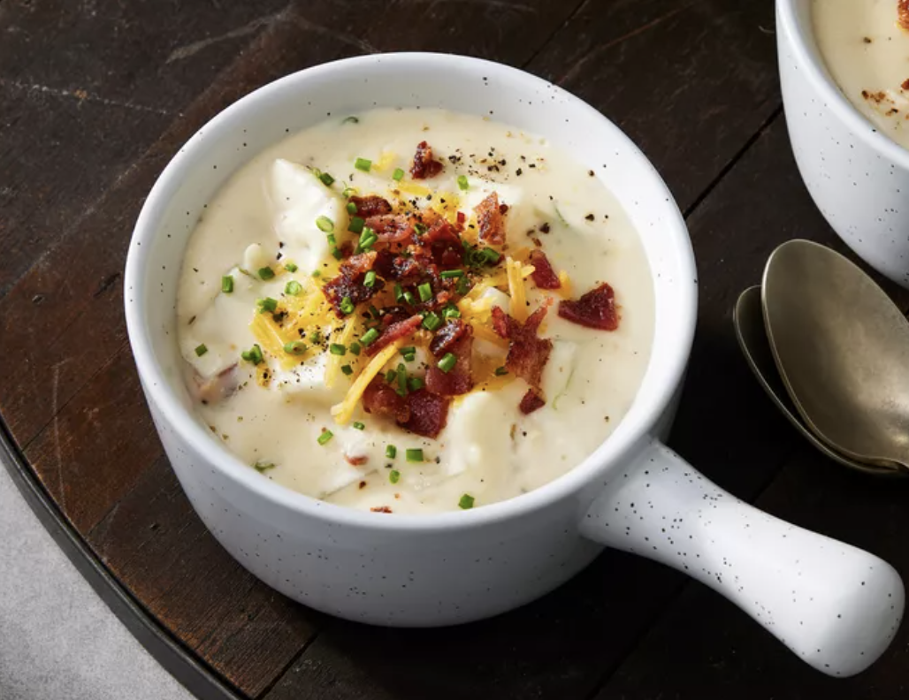

Baked Potato Soup

Description
Baked potato soup is the perfect hearty, filling, stick-to-your-bones
dinner for a cold winter's night. This baked potato soup recipe will
quickly become a family favorite.
Ingredients
-
Bacon: This baked potato soup starts with bacon cooked in a large
skillet.
- Butter: You can also use margarine.
-
Flour and milk: Whisk all-purpose flour and milk into the melted
butter for a perfectly thick base.
- Baked potatoes: Try our Perfect Baked Potatoes recipe.
-
Green onions: Chopped green onions lend bright, bold flavor and color.
-
Seasonings: This baked potato soup is simply seasoned with salt and
pepper.
-
Cheese and sour cream: Shredded Cheddar cheese and sour cream ensure a
rich and creamy soup.
Steps For How To Make Baked Potato Soup.
- Cook the bacon.
- Melt the butter, then whisk in the flour and milk.
- Add the potatoes and onions and bring to a boil.
- Reduce to a simmer, then stir in the remaining ingredients.
- Cook until the cheese is melted.